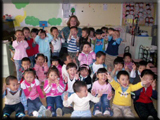

ESL Teachers in China
Rebecca Thomas - 2008 - Teaching in Shanghai

I had been working as a 911 dispatcher for 13 years and decided that I really wanted to begin teaching. I worked on activating my teaching certificate and started looking for job opportunities. I discovered several opportunities to teach abroad and was contacted by several agencies. I researched the agencies and was very pleased with all of the information associated with Reach to Teach.
I spoke with several representatives from Reach to Teach to find a placement that I would enjoy. After several discussions I decided that Shanghai was my destination of choice. Reach to Teach then located and researched several opportunities in the Shanghai area and provided me with some options.
I feel that I was very lucky to have people help to find the best opportunity for me. I received so much support and encouragement from the representatives (Richard especially) while I was planning my travel arrangements. There were some initial difficulties obtaining a working visa due to new restrictions associated with the Olympic Games and Reach to Teach emailed me daily and called me frequently to help work through the issues.
I arrived in China in September of 2008 and began my incredible journey into teaching. I have heard so many stories from people who were not provided assistance or options and discovered that many of the terms of employment, promised before their arrival, were not delivered. I have only had positive experiences with my employer and employment. I work about 20 hours each week and have time off to explore the beautiful country of China and share my experiences with the wonderful friends I’ve made here and family who have been able to visit.
Courtney Cruzan - 2009 - Teaching English in Ningbo, China
My husband and I had been researching for ESL teaching positions in Eastern China for 2 months before we came across Reach to Teach. What we found in Reach to Teach was professionalism and commitment to connect us with the best school that fit our needs in the region we desired to be in.
We each had a very personable and organized interview over the phone. One week after our phone interviews, we began to receive job opportunities. We waited until the right opportunity with a very reputable school came our way. Reach to Teach recommended us and put us into contact directly with the school's director.
Within one week after our introduction, my husband and I both had formal letters of acceptance and the school began to process our visa paperwork. We had spoken to various other independent schools and other teacher recruiting companies, though Reach to Teach was the only one to act quickly and very professionally. I knew I was in good hands and have no doubt the school we chose is a great fit and will be a very rewarding experience.
If you are thinking of teaching English abroad, I highly recommend Reach to Teach for your placement opportunities.
Shane English Ningbo
Wayne Watterson - 2009 - An American in Anji, China
Numerous Westerners have come to East Asia in the last decade to teach during this “English Revolution,” and there are a various deep-rooted motivations that drive people to venture into the other side of the world. For some, it’s to seek adventure, for others, it’s to have a rich cultural experience, and for me it was both of these things, along with the incitement of possible future business opportunities in thriving cities like Shanghai, Hangzhou, Hong Kong, and Taipei.
William Author Ward once said, “The pessimist complains about the wind; the optimist expects it to change; the realist adjusts the sails.” So, in short, I decided to adjust the sails and pursue opportunities in China that would allow me to learn a valuable language, and also have the experience of living in what I believe is one of the most fascinating places in the world.
I have been here now for almost two months and the new life here has exceeded my expectations in practically every regard. I have found the students to be an absolute delight, most of them are eager to learn English, and want very much to become the friends of foreign teachers. They like to come up with nicknames, give invitations to visit their hometowns, and on occasion have given me some thoughtful gifts and once sang a song for me when I came into the class on the “Teacher’s Day” holiday. There is plenty of free time to enjoy, and I spend a large amount of it hanging out with Chinese friends, learning Mandarin, and also experimenting with cooking the new cuisine.
I am grateful towards Reach to Teach for the smooth process and partnering me with this terrific school. If you are interested in coming to Asia, going through a professional and reputed organization will make all of the difference. I highly recommend Reach to Teach.
Michael Rosecrans - 2009 - Teaching in China
After I graduated from university, I knew that I wanted to move to China. I had a friend teaching in South Korea and he suggested looking into opportunities for English teachers in China. The more I researched, the more questions I had. How does the visa process work? What will my job be like? Should I use a recruiting agency? You can find so many terrible stories on the internet from people who end up in bad teaching positions. So I wanted to make sure I had all the facts to make an informed decision.
I applied to several different companies and I decided to use Reach to Teach. They really impressed me by how they handled the recruiting process. They were professional, friendly, and a pleasure to work with. All those questions and concerns I had before were addressed. And in the end, the school they set me up with was perfect for me. I could not have hoped for anything better. Even after I had moved to China, they continued to check up on me to make sure that my new employer was meeting all of my expectations.
I learned from my experience that a good recruiting company like Reach to Teach makes the complicated process of finding a good teaching job easy. My greatest concern, like many people, was that I would move to the other side of the world for a terrible job. But Reach to Teach has worked with many of these schools before. So they know which ones will meet your needs and which ones will not. Knowing this, I felt comfortable enough to make a decision. For anyone considering going abroad to teach English, I highly recommend using Reach to Teach.
- Michael Rosecrans
Jason Cruzan - 2010 - An American in Ningbo, China
The Reach To Teach China program is outstanding, like all their programs. I was placed in Ningbo, China in 2010 and had such a good experience that I signed up for a second year. The school I was at was a top-notch school, I was paid well, had about three weeks of paid vacation throughout the year, and my work environment was great. I was also able to save a lot of my money and send it back home every month. The best thing was the kids, they were amazing and I have kept in touch with a lot of them!
RTT was great, they were always available for me and kept checking on me to make sure things were cool. They were very professional and friendly, and were always looking out for my best interests. I highly recommend the China program!
Shane English Ningbo
Laura W. - 2012 - An American in Shanghai
For anyone interested in moving abroad, I highly recommend Reach to Teach. I have worked with other recruiting agencies in the past, and from my experience, Reach to Teach has offered me the most assistance. I mostly worked with the China Recruitment Department, and was very impressed with the updates and callbacks post-interview. Reach to Teach matched me with the best job through Kid Castle. Kid Castle is an after school academy that relies on the Total Physical Response teaching method. I find this school a very effective program for teaching English, and am so happy with my job situation. From both sides, Reach to Teach and Kid Castle made a great effort to help me, up until I arrived in China. If I had questions, I continued to ask both sides for answers, and both provided the best solutions. I have heard stories of people never hearing from their recruiters after they take a job offer, but I never experienced this with Reach to Teach. I felt they were honest, listened to what I wanted in a job (rather than trying to fill the next available spot in any school), and gave immediate response to e-mails. I know that anyone going through Reach to Teach will find what they need.
Nathan Waters - 2013 - An American Teacher in Beijing
Thank you so much, again, for how helpful you've been in this process. I researched your company the other day and spent over two hours reading forums and other posts and I'm happy to say that I never found one negative thing about Reach to Teach. Everything was positive and people were highly praising the work that your company does to help ease the transition to living and working overseas.
- N. Waters, MS in Education
M. Ramsey - 2014 - An American Teacher in Quanzhou, China
None of this would have been possible without the amazing support and dedication that you and Reach to Teach gave me, for that I am beyond appreciative! The reviews and reputation that Reach to Teach has absolutely were 100 percent correct, you really do care about finding the best possible position for every individual. Thank you again for all of your help! - M. Ramsey
N. Hill - Teaching in China
Thanks for all your encouraging words, Carrie. I've worked with various recruiters in the past and you are definitely the most supportive and thorough!! So, thank you.
Claire Bamford - 2016 - Teaching in Shanghai
Carrie, I am in love with Shanghai. It's a fascinating place and is full of opportunity and fun. My contract is up in February but I decided to re-sign with my school as I'm not ready to leave Shanghai just yet. It's been super and I really appreciate all that you personally and Reach To Teach Recruiting have afforded me. I have actually passed on the details of your company to a few friends as I've really valued the care and effort you put in. 100% for you! Thank you so much!
C. Venter - 2017 - Teaching in China
Thanks to the help and hard work of my recruiter at Reach To Teach, my journey to China was such a smooth and nearly stress free process. I have now been happily living in China for 6 months. Thanks, guys.